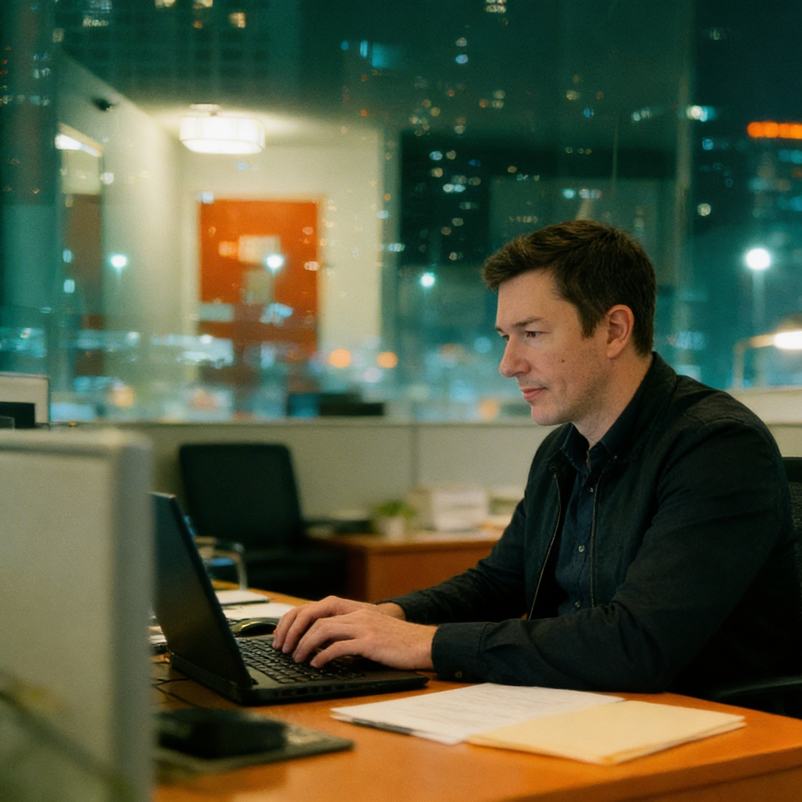

Imagery.
How the founder shows up in the frame. Three modes, one aesthetic, no posing.
Editorial, not staged.
Portraits are observed, not posed. The point is to show a person who notices things, not a personality being performed for the camera.
Portraits look like they were caught between sentences. The camera arrives during the work, not before it. Available light from a window, a cafe, an atrium. Color stays warm without going amber.
If the photo could double as a corporate headshot, it has already failed. Crossed arms, the meaningful look away, the staged laugh, the hand on chin. None of it. The work is the subject.
Approved portraits.
Seven approved portraits across the three outfit presets. Each tagged by mode and context for downstream use in email headers, social posts, About surfaces, and speaking decks.




Three presets.
Three locked outfits cover every context the brand asks for. Mixing or improvising new looks dilutes recognition.
No tie. No jacket. Worn for advisory work, founder calls, About-page surfaces. The default.
Business casual with European edge. No pocket square, no handkerchief, no tie. Reserved for stage and brand-led work.
For reflective content, long-form, the quieter posts. The look of a person not trying to convince anyone of anything.
What's allowed, what's not.
- Editorial framing. Subject between actions, not in front of a camera.
- Natural and available light. Window, atrium, cafe, late office.
- Warm color temperature. Cool tones reserved for subject mode.
- Industrial minimal spaces. Concrete, glass, matte surfaces.
- Working frames. Desk, whiteboard, notebook, laptop, stage.
- Hands doing something. Notes, coffee, mic, pointing at a slide.
- Staged power poses. Crossed arms, hand on chin, deep stare.
- Looking away meaningfully into the middle distance.
- Gradient backdrops. Studio sweeps. Pure white cyc.
- Over-styled environments. Curated bookshelves, plant walls.
- Logo-forward clothing. Pocket squares, handkerchiefs, ties.
- Hustle accessories. Statement watches, chains, conspicuous brands.
Where the camera goes.
Concrete, glass, matte surfaces. The space disappears into the subject. Cold tones, sharp shadows.
Natural side light, warm late-afternoon temperature. Default for portraits at home or in private offices.
Desk, whiteboard, notebook. Visible work. The frame says he was already doing the thing when the camera arrived.
How the body reads.
The portrait works when these read true. They are not directions for the day of the shoot. They are the test for whether a frame is keepable.
-
Energy
The person at dinner who makes you think and laugh in the same sentence. Quiet, not low-energy. Curious, not eager.
-
Posture
Relaxed, open, assured. Never performative or staged. If a stranger walked through the frame, the body would not change.
-
Eye contact
Direct but not intense. Observes more than locks on. The camera is allowed in, not commanded.
-
Expression
Mid-thought. Half-smile permitted, not demanded. The look of somebody listening, not the look of somebody waiting to speak.